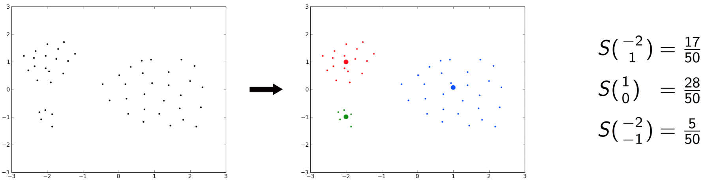
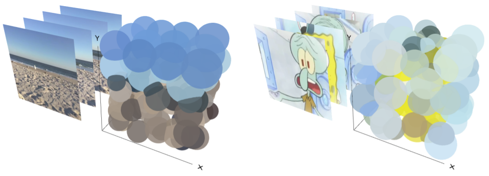

Building a Content-Based Multimedia Search Engine III: Feature Signatures
This is part 3 in a series of tutorials in which we learn how to build a content-based search engine that retrieves multimedia objects based on their content rather than based on keywords, title or meta description.
- Part I: Quantifying Similarity
- Part II: Extracting Feature Vectors
- Part III: Feature Signatures
- Part IV: Earth Mover’s Distance
- Part V: Signature Quadratic Form Distance
- Part VI: Efficient Query Processing
When computing the distance between two multimedia objects, it would be highly inefficient to take into account all of the extracted feature vectors. For most practical purposes, however, it is not necessary to do this in order to achieve a good discriminability of the objects. Most of the vectors carry redundant information or fine-grained details that do not have a significant influence on the overall similarity of two objects. Hence, we summarize all of the extracted features into a structure called a feature signature.
Intuitively, a feature signature is characterized by a relatively small set of feature vectors, called the representatives, along with a weight for each representative.
Formally, if we let $\mathbb{F}$ denote the set of all possible features, a feature signature $X$ is a function $X : \mathbb{F} \rightarrow \mathbb{R}$ such that $|\{f \in \mathbb{F} \; | \; X(f) = 0\}| < \infty$ (i.e. it assigns a weight to only a finite number of vectors and assigns 0 everywhere else). We refer to $R_X =|\{f \in \mathbb{F} \; | \; X(f) = 0\}|$ as the representatives of $X$. We use $\mathbb{S}$ to refer to the set of all feature signatures.
A common way to calculate a feature signature is to apply a clustering algorithm (e.g. k-means) to the extracted set of feature vectors. From the resulting clustering, we devise a feature signature by defining the cluster means as the representatives and assigning them a weight corresponding to the relative size of the cluster, i.e. the number of cluster elements divided by the total number of extracted features. Here is an example depicting this process for 2-dimensional feature vectors:

First, the vectors are clustered, yielding 3 clusters (red, green and blue). Then we compute the cluster centers (depicted as the large red, green and blue dots), which we define as the representatives of the feature signature S, and assign them a weight corresponding to the relative cluster size (i.e. the number of feature vectors in the cluster divided by the total number of feature vectors).
Let’s formalize this process. Let $C = C_1, ..., C_m$ be a clustering of feature vectors. We define the clustering-induced normalized feature signature $X_C$ as $X_C : \mathbb{F} \rightarrow \mathbb{R}$ with:
$$
X_C(f)=
\begin{cases}
\frac{|C_i|}{\sum_{1 \leq j \leq m} |C_j|} & \text{if } f =
\frac{1}{|C_i|} \sum_{g \in C_i} g\\
0 & \text{else}
\end{cases}
$$
Before applying the clustering algorithm, we multiply each dimension by a certain weight, which allows us to control the importance of that dimension for the clustering. When using k-means to calculate the clustering, we can specify the desired number of representatives k in advance. This allows us to control the expressiveness of the feature signature. The higher we choose k, the more expressive the feature signature gets, with the downside of increasing the storage size and the computational complexity of the distance computation. There is a monotonous relation between k and the effectiveness (i.e. adequacy of the results) as well as the query processing time. Hence, k allows us to control the tradeoff between effectiveness and efficiency.
The following image depicts 3D visualizations of two videos and their feature signatures with k = 100. Here, the clusters are represented as spheres. Their position in the 3D coordinate system corresponds to the position (x and y) and the time (t), the color of the sphere corresponds to the L*a*b* color dimensions of the representatives and the volume of the sphere corresponds to the weight that the feature signature assigns to the representative. As we can see, the feature signature summarizes the visual content of the video as it unfolds over time using just 100 vectors.

We have seen how feature signatures reduce the rather large amount of information inherent in the feature vectors into a compact representation that still reveals a lot of information about the feature distribution, since it summarizes how many feature vectors are located at which locations in the feature space. In the next section, we will see how we can compute the similarity between two feature signatures. Continue with the next section: Earth Mover’s Distance